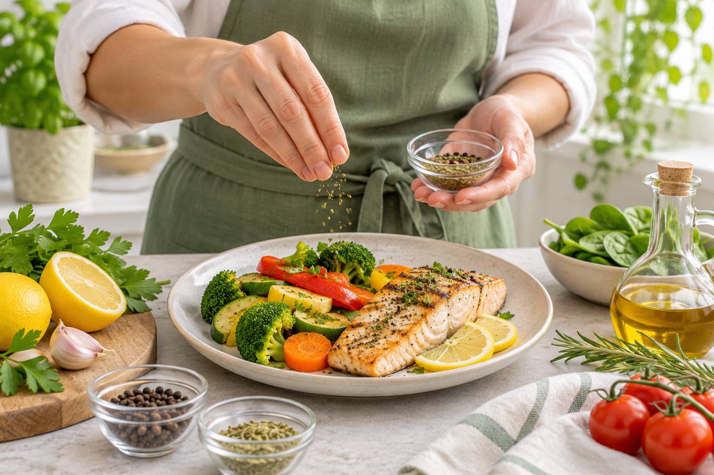

Nutrición clínica
Tu salud también se nutre
Valoración, tratamiento y acompañamiento nutricional personalizado para prevenir, controlar y mejorar enfermedades crónicas.
- Atención
personalizada - Respaldo
científico - Seguimiento
continuo
Nutrición clínica
Valoración, tratamiento y acompañamiento nutricional personalizado para prevenir, controlar y mejorar enfermedades crónicas.
Atención integral
Especialidades en nutrición clínica para el cuidado integral de tu salud
Control nutricional y prevención de complicaciones.
Alimentación para el control de la presión arterial.
Plan nutricional personalizado, saludable y sostenible.
Apoyo nutricional para favorecer el equilibrio y bienestar.
Manejo nutricional de gastritis, colon irritable y otros trastornos digestivos.
Conoce a tu nutricionista
Mi compromiso es acompañarte en el cuidado de tu salud mediante una atención nutricional personalizada, basada en evidencia científica y adaptada a tus necesidades.
Mi metodología
Cada persona tiene necesidades diferentes. Por eso, mi atención nutricional se basa en un proceso personalizado, organizado y orientado al bienestar integral.
Evaluamos tus hábitos alimentarios, antecedentes y necesidades nutricionales para conocer tu estado de salud.
Diseñamos recomendaciones alimentarias adaptadas a tus objetivos, preferencias y condiciones de salud.
Realizamos un seguimiento de tu evolución para evaluar los avances y ajustar las recomendaciones cuando sea necesario.
Blog nutricional
Descubre artículos, recomendaciones y consejos sobre nutrición clínica y alimentación saludable.
Conoce los principios de una alimentación variada y equilibrada para cuidar tu bienestar.
Artículo demostrativo. El contenido educativo se incorporará próximamente y no sustituye una consulta nutricional.

Conoce cómo los hábitos alimentarios pueden contribuir al cuidado de la salud cardiovascular.
Artículo demostrativo. El contenido educativo se incorporará próximamente y no sustituye una consulta nutricional.
Descubre cómo pequeños cambios pueden favorecer una mejor relación con la alimentación.
Artículo demostrativo. El contenido educativo se incorporará próximamente y no sustituye una consulta nutricional.